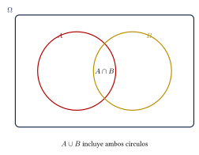
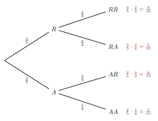

Capítulo 47
Probabilidad básica
IPN CENEVAL
La probabilidad mide la posibilidad de que ocurra un evento en un experimento aleatorio.
En este capítulo aprenderás a:
- construir espacios muestrales;
- calcular probabilidades simples;
- utilizar las reglas de la suma y del producto;
- calcular probabilidades condicionales;
- distinguir eventos excluyentes e independientes;
- interpretar diagramas de árbol.
47.1 Experimentos aleatorios#
Un experimento aleatorio es un procedimiento cuyo resultado no puede conocerse con certeza antes de realizarlo.
El conjunto de todos los resultados posibles se llama espacio muestral y se representa mediante:
Cada resultado individual se denomina punto muestral.
Escribe el espacio muestral de los siguientes experimentos.
- Lanzar una moneda.
- Lanzar un dado de seis caras.
- Lanzar dos monedas.
Ver solución
Si \(A\) representa águila y \(S\) representa sol:
Para el dado:
Para dos monedas:
Los resultados:
son diferentes porque representan órdenes distintos.
47.2 Eventos#
Un evento o suceso es un subconjunto del espacio muestral.
Los eventos principales son:
- Evento elemental: contiene un solo resultado.
- Evento seguro: coincide con todo el espacio muestral.
- Evento imposible: no contiene resultados.
- Evento complemento: contiene los resultados que no pertenecen al evento original.
El complemento de \(A\) se representa mediante:
o:
47.2.1 Unión e intersección#
La unión:
contiene los resultados que pertenecen a \(A\), a \(B\) o a ambos.
La intersección:
contiene los resultados que pertenecen simultáneamente a \(A\) y a \(B\).
Al lanzar un dado, sean:
y:
Determina la unión, la intersección y el complemento de \(A\).
Ver solución
La unión es:
La intersección es:
El complemento de \(A\) es:

47.3 Eventos mutuamente excluyentes#
Dos eventos son mutuamente excluyentes o disjuntos si no pueden ocurrir al mismo tiempo.
Por tanto:
Por ejemplo, al lanzar un dado, los eventos:
y:
son mutuamente excluyentes.
Los eventos mutuamente excluyentes no son necesariamente independientes.
Si un evento ocurre y eso impide que ocurra el otro, existe una dependencia entre ellos.
47.4 Probabilidad clásica#
Si todos los resultados son igualmente probables:
También puede escribirse:
La fórmula clásica solo puede utilizarse directamente cuando los resultados del espacio muestral son igualmente probables.
47.4.1 Propiedades básicas#
Para cualquier evento \(A\):
Además:
La probabilidad del complemento es:
Al lanzar un dado, calcula la probabilidad de:
- obtener un número par;
- obtener un número mayor que \(4\);
- obtener un \(7\).
Ver solución
El espacio muestral es:
Para obtener un número par:
Por tanto:
Para obtener un número mayor que \(4\):
Por tanto:
Obtener un \(7\) es imposible:
Una urna contiene:
Calcula la probabilidad de extraer una canica roja o azul.
Ver solución
El total es:
Los casos favorables son:
Por tanto:
47.5 Regla de la suma#
Para dos eventos cualesquiera:
Se resta la intersección porque fue contada dos veces.
Si los eventos son mutuamente excluyentes:
por lo que:
Al lanzar un dado, sean:
y:
Calcula:
Ver solución
Aplicamos la regla:
Por tanto:
En una clase de \(30\) estudiantes:
- \(18\) aprueban Matemáticas;
- \(15\) aprueban Física;
- \(8\) aprueban ambas materias.
Calcula la probabilidad de que un estudiante apruebe al menos una materia.
Ver solución
El número de estudiantes que aprueba al menos una es:
Por tanto:
47.6 Regla del complemento#
En algunos problemas es más fácil calcular que un evento no ocurra.
La regla del complemento es especialmente útil en expresiones como:
- al menos uno;
- ninguno;
- no ocurra;
- uno o más.
Se lanza un dado cuatro veces. Calcula la probabilidad de obtener al menos un \(6\).
Ver solución
Es más sencillo calcular la probabilidad de no obtener ningún \(6\).
En un lanzamiento:
Los cuatro lanzamientos son independientes:
Por tanto:
47.7 Probabilidad condicional#
La probabilidad condicional de \(A\) dado que ocurrió \(B\) es:
si:
Al conocer que ocurrió \(B\), el nuevo espacio muestral se reduce a los resultados de \(B\).
Se lanza un dado. Si se sabe que el resultado es par, calcula la probabilidad de que sea mayor que \(3\).
Ver solución
El evento conocido es:
Dentro de este nuevo espacio, los resultados mayores que \(3\) son:
Por tanto:
También puede calcularse mediante:
47.8 Regla del producto#
Para eventos dependientes:
Equivalentemente:
Si los eventos son independientes:
Se lanza una moneda dos veces. Calcula la probabilidad de obtener dos águilas.
Ver solución
Los lanzamientos son independientes.
Por tanto:
Una urna contiene \(4\) canicas rojas y \(6\) blancas. Se extraen dos canicas sin reemplazo.
Calcula la probabilidad de que ambas sean rojas.
Ver solución
La probabilidad de que la primera sea roja es:
Después de extraer una roja quedan \(3\) rojas entre \(9\) canicas:
Aplicamos la regla del producto:
Por tanto:
47.9 Eventos independientes#
Dos eventos son independientes si la ocurrencia de uno no cambia la probabilidad del otro.
Las condiciones equivalentes son:
y:
| Concepto | Condición | Significado |
|---|---|---|
| Excluyentes | \(A\cap B=\varnothing\) | No ocurren juntos |
| Independientes | \(P(A\cap B)=P(A)P(B)\) | Uno no afecta al otro |
Los términos excluyentes e independientes no significan lo mismo.
Si dos eventos con probabilidad positiva son excluyentes, entonces no pueden ser independientes.
47.10 Experimentos con y sin reemplazo#
47.10.1 Con reemplazo#
El objeto seleccionado regresa al conjunto antes de la siguiente extracción.
Las probabilidades normalmente permanecen iguales.
47.10.2 Sin reemplazo#
El objeto seleccionado no regresa al conjunto.
El total de objetos y las probabilidades cambian.
| Extracción | Total | Relación |
|---|---|---|
| Con reemplazo | Permanece igual | Generalmente independiente |
| Sin reemplazo | Disminuye | Generalmente dependiente |
47.11 Diagramas de árbol#
Un diagrama de árbol representa experimentos realizados en varias etapas.
Para utilizarlo:
- multiplica las probabilidades a lo largo de una ruta;
- suma las probabilidades de las rutas favorables.
Una urna contiene \(3\) canicas rojas y \(2\) azules. Se extraen dos canicas sin reemplazo.
Calcula la probabilidad de obtener una roja y una azul, en cualquier orden.
Ver solución
El diagrama es:

Las rutas favorables son:
Por tanto:
Así:
47.12 Procedimiento rápido#
- Identifica el experimento.
- Construye el espacio muestral si es necesario.
- Define claramente los eventos.
Decide si se requiere:
- suma;
- producto;
- complemento;
- probabilidad condicional.
- Verifica si los eventos son independientes.
- Revisa si existe reemplazo.
- Simplifica la fracción y comprueba que: \[0\leq P(A)\leq1.\]
Palabras clave#
| Expresión | Operación probable |
|---|---|
| \(A\) o \(B\) | Unión |
| \(A\) y \(B\) | Intersección |
| No ocurra \(A\) | Complemento |
| \(A\) dado \(B\) | Probabilidad condicional |
| Al menos uno | Complemento |
| En cualquier orden | Sumar rutas favorables |
47.13 Resumen#
Probabilidad clásica:
Complemento:
Regla de la suma:
Probabilidad condicional:
Regla del producto:
Eventos independientes:
Eventos mutuamente excluyentes:
47.14 Errores frecuentes#
Recuerda:
- La fórmula clásica requiere resultados igualmente probables.
- En la regla de la suma debe restarse la intersección.
- Los eventos excluyentes no son lo mismo que los eventos independientes.
- La probabilidad condicional modifica el espacio muestral.
- Sin reemplazo, las probabilidades cambian.
- Con reemplazo, el total vuelve a ser el original.
- En un árbol se multiplican probabilidades a lo largo de una ruta.
- Si existen varias rutas favorables, sus probabilidades se suman.
- Toda probabilidad debe encontrarse entre \(0\) y \(1\).
- Si el resultado es un porcentaje, debe multiplicarse por: \[100\%.\]
47.15 Ejercicios propuestos#
Describe el espacio muestral de lanzar dos dados de seis caras.
Determina el número total de resultados posibles.
Ver solución
\(\Omega = \{(1,1), (1,2), \dots, (6,6)\}\). El número total de resultados es \(6 \times 6 = 36\).
Al lanzar un dado, calcula la probabilidad de obtener:
- un número impar;
- un número menor que \(3\);
- un número primo.
Ver solución
\(\Omega = \{1, 2, 3, 4, 5, 6\}\). 1. Impar \(\{1,3,5\}\): \(P = 3/6 = 1/2\). 2. Menor que \(3\) \(\{1,2\}\): \(P = 2/6 = 1/3\). 3. Primo \(\{2,3,5\}\): \(P = 3/6 = 1/2\).
De una baraja inglesa de \(52\) cartas se extrae una carta al azar.
Calcula la probabilidad de obtener:
- un as;
- una carta roja;
- una figura: J, Q o K.
Ver solución
1. As (hay \(4\)): \(P = 4/52 = 1/13\). 2. Carta roja (hay \(26\)): \(P = 26/52 = 1/2\). 3. Figura (\(3\) por palo, en total \(12\)): \(P = 12/52 = 3/13\).
Una urna contiene:
Calcula la probabilidad de que una bola elegida al azar no sea verde.
Ver solución
Total \(= 6 + 4 + 5 = 15\). Las no verdes son rojas o azules: \(6 + 4 = 10\). \(P(\text{no verde}) = 10/15 = 2/3\).
Sean \(A\) y \(B\) dos eventos con:
y:
Calcula:
Ver solución
\(P(A \cup B) = P(A) + P(B) - P(A \cap B) = 0.5 + 0.4 - 0.2 = 0.7\).
En una escuela:
y:
Calcula la probabilidad de que un estudiante apruebe al menos una de las dos materias.
Ver solución
\(P(I \cup H) = P(I) + P(H) - P(I \cap H) = 0.60 + 0.50 - 0.30 = 0.80\).
Se lanza un dado. Si se sabe que el resultado es mayor que \(2\), calcula la probabilidad de que sea par.
Ver solución
\(B = \{3,4,5,6\}\) y \(A \cap B = \{4,6\}\). \(P(A \mid B) = \frac{2}{4} = \frac{1}{2}\).
Una caja contiene \(5\) focos buenos y \(2\) defectuosos.
Se extraen dos focos sin reemplazo.
Calcula la probabilidad de que ambos sean buenos.
Ver solución
Total \(= 7\). \(P(B_1 \cap B_2) = P(B_1)P(B_2 \mid B_1) = \left(\frac{5}{7}\right)\left(\frac{4}{6}\right) = \frac{20}{42} = \frac{10}{21}\).
Se lanza una moneda tres veces.
Calcula la probabilidad de obtener exactamente dos águilas.
Ver solución
Los \(8\) resultados posibles son: \(AAA, AAS, ASA, SAA, ASS, SAS, SSA, SSS\). Casos con exactamente dos águilas: \(AAS, ASA, SAA\). Por tanto, \(P = 3/8\).
En una ciudad:
y:
Calcula:
- la probabilidad de que una persona tenga automóvil o motocicleta;
- la probabilidad de que tenga motocicleta, sabiendo que tiene automóvil.
Ver solución
1. \(P(A \cup M) = P(A) + P(M) - P(A \cap M) = 0.40 + 0.25 - 0.10 = 0.55\). 2. \(P(M \mid A) = \frac{P(A \cap M)}{P(A)} = \frac{0.10}{0.40} = 0.25\).
Una urna contiene \(4\) bolas blancas y \(3\) negras.
Se extraen dos bolas con reemplazo.
Calcula la probabilidad de obtener dos bolas negras.
Ver solución
Con reemplazo, los eventos son independientes. \(P(N_1 \cap N_2) = \left(\frac{3}{7}\right)\left(\frac{3}{7}\right) = \frac{9}{49}\).
Una urna contiene \(4\) bolas blancas y \(3\) negras.
Se extraen dos bolas sin reemplazo.
Calcula la probabilidad de obtener dos bolas negras y compara el resultado con el ejercicio anterior.
Ver solución
Sin reemplazo, el segundo evento depende del primero. \(P(N_1 \cap N_2) = \left(\frac{3}{7}\right)\left(\frac{2}{6}\right) = \frac{6}{42} = \frac{1}{7}\). La probabilidad disminuye con respecto al caso con reemplazo, ya que \(\frac{1}{7} = \frac{7}{49} < \frac{9}{49}\).